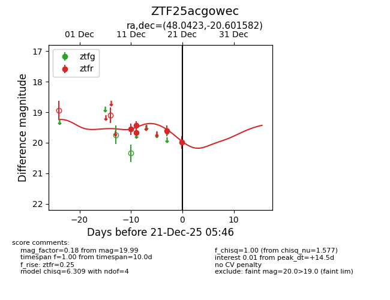
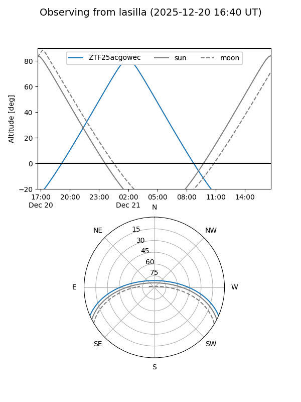
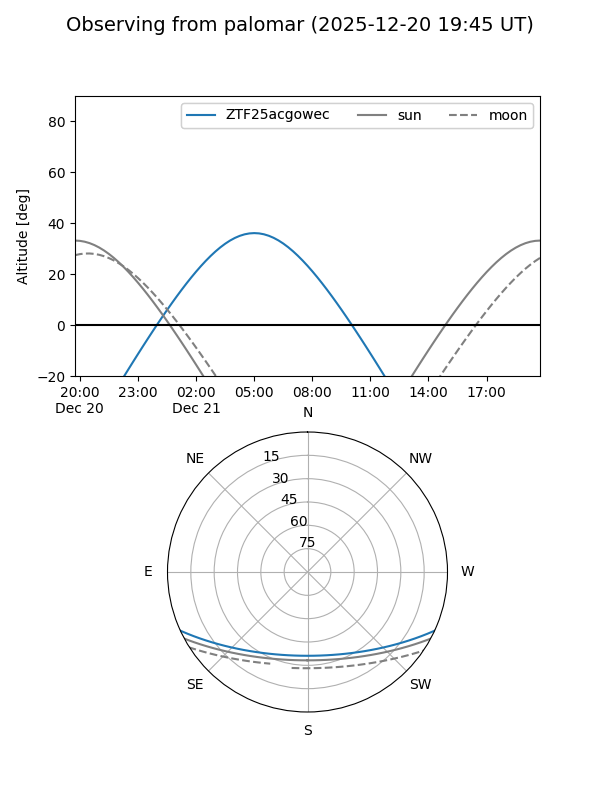
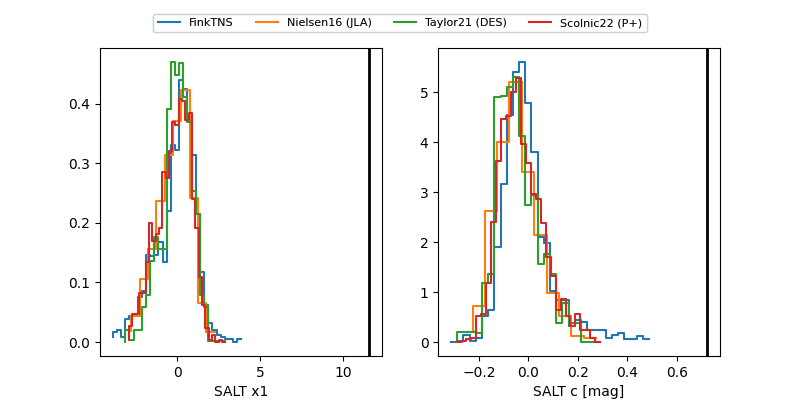

ZTF25acgowec
Target ZTF25acgowec at 2025-12-21 05:48
Aliases and brokers:
FINK: fink-portal.org/ZTF25acgowec
Lasair: lasair-ztf.lsst.ac.uk/objects/ZTF25acgowec
ALeRCE: alerce.online/object/ZTF25acgowec
alt names
ZTF25acgowec (ztf,fink_ztf)
Coordinates:
equatorial (ra, dec) = 48.0423,-20.60158
equatorial (HMS+DMS) = 03:12:10.15,-20:36:05.70
galactic (l, b) = (209.1457,-57.28099)
Flags:
Photometry:
last ztfr=19.99
5 ztfr detections
Lightcurve

Visibility


Additional plots
